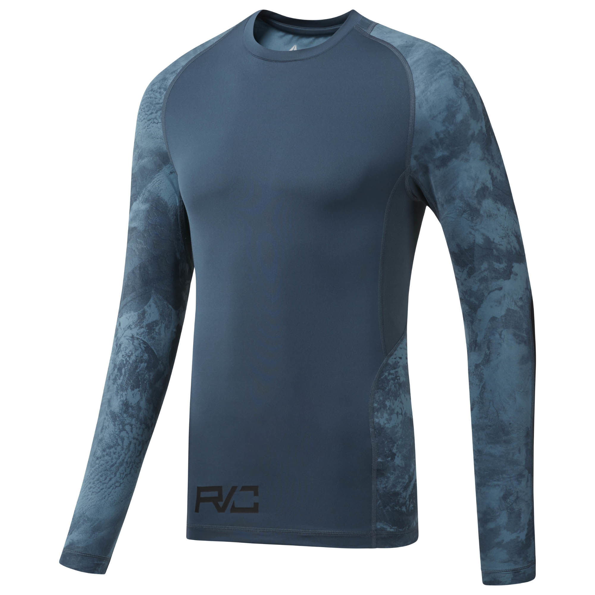

Рашгард Combat Prime LS
Описание товара

Рашгард с длинным рукавом Combat Prime LS
Цена: 4 690 руб.
Характеристики товара
- Идеально для занятий единоборствами, поддержки мышц, защиты при работе со снарядами
- Компрессионный крой, идеально прилегающий к телу
- Сетчатые вставки для лучшей вентиляции
- Технология Speedwick отводит излишки влаги с поверхности тела, оставляя ощущение сухости и комфорта
- Материал: 87% переработанный полиэстер / 13% эластан, одинарное джерси; вторичное использование материалов позволяет сохранить природные ресурсы и уменьшить выбросы в атмосферу
- Страна-производитель: Филиппины
Подробное описание товара
Поддержка. Свежесть. Защита. Этот рашгард с длинным рукавом Combat Prime выполнен из компрессионной ткани для поддержки мышц со вставками из материала ACTIVCHILL, гарантирует непревзойденную вентиляцию. Антибактериальная обработка препятствует появлению неприятного запаха.
Доступные цвета и размеры
Цвет: PAYNES GREY/ BLACK
Размеры: 50(M)/ 54(L)/ 58(XL)/ 62(2XL)
Все права защищены